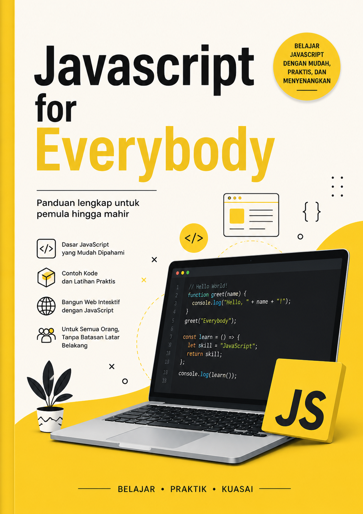

Panduan lengkap untuk semua orang — dari yang belum pernah menulis satu baris kode sekalipun, hingga menjadi developer profesional yang mahir.
Kenali senjata Anda sebelum mulai berperang. Di sini kita akan pahami apa itu JavaScript, TypeScript, dan Bun.js serta mengapa mereka menjadi pilihan utama developer modern.
Bayangkan sebuah website adalah sebuah rumah. HTML adalah batu bata dan tembok rumah itu — struktur dasarnya. CSS adalah cat dinding, dekorasi, dan furnitur — penampilannya. Lalu JavaScript adalah listrik dan sistem pipa air di dalam rumah itu — ia yang membuat segalanya hidup dan bekerja.
JavaScript (sering disingkat JS) adalah bahasa pemrograman yang awalnya diciptakan oleh Brendan Eich pada tahun 1995 hanya dalam waktu 10 hari untuk membuat halaman web menjadi interaktif. Kini, 30 tahun kemudian, JavaScript telah menjadi salah satu bahasa pemrograman paling populer di dunia — digunakan di browser, server, aplikasi mobile, bahkan perangkat IoT.
TypeScript adalah JavaScript yang "dipertegas". Ia dibuat oleh Microsoft pada tahun 2012 dan dirilis sebagai proyek open-source. TypeScript adalah superset dari JavaScript — artinya, semua kode JavaScript yang valid juga valid sebagai TypeScript.
Perbedaan utamanya: TypeScript menambahkan sistem tipe statis (static typing). Dengan kata lain, Anda bisa memberitahu program secara eksplisit: "variabel ini pasti berisi angka" atau "fungsi ini pasti mengembalikan teks". Ini sangat membantu dalam proyek besar karena banyak bug bisa terdeteksi bahkan sebelum program dijalankan.
Bun adalah JavaScript runtime yang sangat cepat, dibuat dari awal dengan fokus pada kecepatan, efisiensi, dan pengalaman developer yang menyenangkan. Bun dibuat oleh Jarred Sumner dan dirilis pada 2023.
Sebelumnya, JavaScript di luar browser dijalankan menggunakan Node.js. Bun hadir sebagai alternatif yang jauh lebih cepat — bahkan bisa 3x-10x lebih cepat dalam beberapa benchmark. Yang membuatnya istimewa:
.ts langsung tanpa perlu kompilasi tambahanfetch, WebSocket, dll. sudah tersedia tanpa library tambahanInilah perpaduan yang sangat powerful untuk tahun 2025 dan seterusnya:
| Teknologi | Peran | Alasan Belajar |
|---|---|---|
| JavaScript | Fondasi | Bahasa yang digunakan semua platform web |
| TypeScript | Kualitas kode | Mencegah bug, kode lebih mudah dipelihara |
| Bun.js | Runtime modern | Cepat, mudah, TypeScript native |
Sebelum memasak, Anda butuh dapur dan peralatan. Di sini kita siapkan semua yang dibutuhkan untuk mulai coding.
Bun tersedia untuk macOS, Linux, dan Windows. Berikut cara instalasi:
curl -fsSL https://bun.sh/install | bashpowershell -c "irm bun.sh/install.ps1 | iex"bun --version
# Output: 1.x.xVisual Studio Code (VS Code) adalah editor kode paling populer untuk JavaScript/TypeScript. Download di code.visualstudio.com.
Install ekstensi yang direkomendasikan:
# Buat folder proyek
mkdir belajar-js
cd belajar-js
# Inisiasi proyek Bun
bun init
# Ikuti promptnya:
# package name: belajar-js
# entry point: index.tsSetelah bun init, akan terbentuk file index.ts. Buka file tersebut dan ganti isinya dengan:
// Program pertama kita!
const pesan: string = "Halo, Dunia!";
console.log(pesan);
console.log("Selamat datang di dunia JavaScript & TypeScript!");
console.log("Versi Bun:", Bun.version);Jalankan dengan:
bun run index.tsbelajar-js/
├── index.ts # File utama program
├── package.json # Konfigurasi proyek & dependencies
├── tsconfig.json # Konfigurasi TypeScript
├── bun.lockb # Lock file Bun (jangan diedit manual)
└── node_modules/ # Folder library yang diinstallbun --version dan catat versi yang terinstall.bun init.index.ts agar menampilkan nama lengkap, umur, dan hobi Anda masing-masing di baris yang berbeda.salam.ts dengan isi: console.log("Salam dari file kedua!") dan jalankan dengan bun run salam.ts.bun run dan bun index.ts? Coba keduanya!Variabel adalah kotak tempat menyimpan data. Tipe data adalah label yang memberi tahu apa isi kotak itu. Ini adalah fondasi dari semua pemrograman.
Di JavaScript/TypeScript, ada tiga cara mendeklarasikan variabel:
| Kata Kunci | Bisa Diubah? | Scope | Rekomendasi |
|---|---|---|---|
var | Ya | Function scope (lama, hindari) | ❌ Hindari |
let | Ya | Block scope | ✅ Gunakan untuk nilai yang berubah |
const | Tidak | Block scope | ✅ Gunakan sebisa mungkin |
// const — nilai tidak bisa diubah setelah dideklarasikan
const namaApp: string = "BelajarJS";
const versi: number = 1.0;
const aktif: boolean = true;
// let — nilai bisa diubah
let skorPemain: number = 0;
skorPemain = 100; // ✅ Boleh
skorPemain = 250; // ✅ Boleh
// namaApp = "LainApp"; // ❌ Error! const tidak bisa diubah
console.log(namaApp, versi, aktif, skorPemain);namaLengkapnama ≠ Nama ≠ NAMAlet, const, class, dll.// Tiga cara membuat string
const s1: string = "Menggunakan double quotes";
const s2: string = 'Menggunakan single quotes';
const s3: string = `Menggunakan backtick (template literal)`;
// Template literal: sisipkan variabel ke dalam string
const nama: string = "Budi";
const umur: number = 25;
const perkenalan: string = `Halo, nama saya ${nama} dan saya berumur ${umur} tahun.`;
console.log(perkenalan);
// Output: Halo, nama saya Budi dan saya berumur 25 tahun.
// String multi-baris dengan template literal
const puisi: string = `
Roses are red,
Violets are blue,
JavaScript is awesome,
And TypeScript too!
`;
// Method (fungsi bawaan) string yang berguna
const kalimat: string = " Hello, World! ";
console.log(kalimat.trim()); // "Hello, World!" — hapus spasi
console.log(kalimat.toUpperCase()); // " HELLO, WORLD! "
console.log(kalimat.toLowerCase()); // " hello, world! "
console.log(kalimat.includes("World")); // true
console.log(kalimat.replace("World", "Indonesia")); // " Hello, Indonesia! "
console.log(kalimat.split(",")); // [" Hello", " World! "]
console.log("panjang:".length + " " + kalimat.trim().length); // panjang: 13// JavaScript hanya punya satu tipe angka: number
const bilBulat: number = 42;
const bilDesimal: number = 3.14;
const bilNegatif: number = -100;
const bilBesar: number = 1_000_000; // underscore sebagai pemisah ribuan
// Operasi matematika dasar
console.log(10 + 3); // 13 — penjumlahan
console.log(10 - 3); // 7 — pengurangan
console.log(10 * 3); // 30 — perkalian
console.log(10 / 3); // 3.3333... — pembagian
console.log(10 % 3); // 1 — modulus (sisa bagi)
console.log(10 ** 3); // 1000 — eksponen (pangkat)
// Math object: fungsi matematika lanjutan
console.log(Math.round(3.7)); // 4 — bulatkan ke terdekat
console.log(Math.floor(3.9)); // 3 — bulatkan ke bawah
console.log(Math.ceil(3.1)); // 4 — bulatkan ke atas
console.log(Math.abs(-42)); // 42 — nilai absolut
console.log(Math.sqrt(16)); // 4 — akar kuadrat
console.log(Math.max(1, 5, 3)); // 5 — nilai terbesar
console.log(Math.min(1, 5, 3)); // 1 — nilai terkecil
console.log(Math.random()); // angka acak 0-1
// Nilai spesial
console.log(Infinity); // tak hingga
console.log(-Infinity); // tak hingga negatif
console.log(NaN); // Not a Number (hasil operasi invalid)
console.log(isNaN("abc" as any)); // true// Boolean hanya punya dua nilai: true atau false
const sudahLogin: boolean = true;
const emailTerverifikasi: boolean = false;
// Nilai "truthy" dan "falsy" di JavaScript
// Falsy values (dianggap false):
console.log(Boolean(0)); // false
console.log(Boolean("")); // false
console.log(Boolean(null)); // false
console.log(Boolean(undefined)); // false
console.log(Boolean(NaN)); // false
// Semua nilai lain dianggap truthy:
console.log(Boolean(1)); // true
console.log(Boolean("hello")); // true
console.log(Boolean([])); // true (array kosong = truthy!)
console.log(Boolean({})); // true (object kosong = truthy!)// undefined: variabel dideklarasikan tapi belum diberi nilai
let namaUser: string | undefined;
console.log(namaUser); // undefined
// null: secara sengaja menyatakan "tidak ada nilai"
let dataPengguna: object | null = null;
// Perbedaan penting:
console.log(typeof undefined); // "undefined"
console.log(typeof null); // "object" (ini bug bersejarah di JS!)
// Nullish coalescing operator (??)
const input: string | null = null;
const nilai = input ?? "Nilai default";
console.log(nilai); // "Nilai default"
// Optional chaining (?.)
const user = null;
console.log(user?.nama); // undefined (bukan error!)// Symbol: nilai unik yang tidak bisa diduplikasi
const id1 = Symbol("id");
const id2 = Symbol("id");
console.log(id1 === id2); // false! Selalu berbeda
// BigInt: untuk angka sangat besar melebihi batas Number
const angkaBesar: bigint = 9007199254740991n; // tambahkan 'n' di akhir
const lebihBesar: bigint = BigInt("99999999999999999999999");
console.log(lebihBesar + 1n);// Anotasi tipe dasar
let nama: string = "Alice";
let umur: number = 30;
let aktif: boolean = true;
// Array
let buah: string[] = ["apel", "mangga", "jeruk"];
let angka: number[] = [1, 2, 3, 4, 5];
let campur: (string | number)[] = ["satu", 2, "tiga", 4];
// Tuple: array dengan tipe yang sudah ditentukan per posisi
let koordinat: [number, number] = [10.5, 106.8];
let profil: [string, number, boolean] = ["Budi", 25, true];
// Any: menonaktifkan type checking (hindari jika bisa)
let apa_saja: any = "bisa apa saja";
apa_saja = 42;
apa_saja = true;
// Unknown: lebih aman dari any
let input: unknown = "entah apa";
if (typeof input === "string") {
console.log(input.toUpperCase()); // OK, sudah dicek
}
// Void: untuk fungsi yang tidak mengembalikan nilai
function cetakPesan(pesan: string): void {
console.log(pesan);
// tidak ada return
}
// Never: untuk fungsi yang tidak pernah selesai/selalu throw
function lemparError(msg: string): never {
throw new Error(msg);
}
// Union type: bisa berupa beberapa tipe
let id: string | number = "abc123";
id = 456; // juga valid
// Literal type: hanya boleh nilai tertentu
let arah: "utara" | "selatan" | "timur" | "barat";
arah = "utara"; // ✅
// arah = "atas"; // ❌ Error!
// Optional (?)
function sapa(nama: string, sapaan?: string): string {
return `${sapaan ?? "Halo"}, ${nama}!`;
}
console.log(sapa("Budi")); // "Halo, Budi!"
console.log(sapa("Ani", "Selamat pagi")); // "Selamat pagi, Ani!"profil.ts yang menyimpan: nama (string), umur (number), tinggi badan dalam cm (number), sudah menikah (boolean), dan kota asal (string). Cetak semua menggunakan template literal dalam satu paragraf kalimat.Math.PI dan Math.round().nilai dengan tipe union string | number | null. Assign nilai null, lalu cetak hasilnya menggunakan nullish coalescing (??) dengan nilai default "Tidak ada nilai".mahasiswa yang berisi: NIM (string), nama (string), IPK (number), aktif (boolean). Cetak setiap elemennya.const untuk suhu dalam Celsius, Fahrenheit, dan Kelvin. Rumus: F = (C × 9/5) + 32, K = C + 273.15.Operator adalah simbol yang melakukan operasi pada nilai. Dari operasi matematika sederhana hingga perbandingan yang kompleks.
let a: number = 15;
let b: number = 4;
console.log(a + b); // 19 — penjumlahan
console.log(a - b); // 11 — pengurangan
console.log(a * b); // 60 — perkalian
console.log(a / b); // 3.75 — pembagian
console.log(a % b); // 3 — modulus (sisa bagi)
console.log(a ** b); // 50625 — pangkat
// Increment & Decrement
let x: number = 5;
x++; // x = x + 1 = 6
x--; // x = x - 1 = 5
++x; // sama, tapi pre-increment
--x; // sama, tapi pre-decrement
// Assignment operator
let n: number = 10;
n += 5; // n = n + 5 = 15
n -= 3; // n = n - 3 = 12
n *= 2; // n = n * 2 = 24
n /= 4; // n = n / 4 = 6
n %= 4; // n = n % 4 = 2
n **= 3; // n = n ** 3 = 8// Selalu gunakan === (strict equality), bukan == (loose equality)
console.log(5 === 5); // true — sama nilai DAN tipe
console.log(5 === "5"); // false — berbeda tipe!
console.log(5 == "5"); // true — loose: JS konversi tipe dulu (HINDARI!)
console.log(5 !== 3); // true — tidak sama (strict)
console.log(5 > 3); // true — lebih besar
console.log(5 < 3); // false — lebih kecil
console.log(5 >= 5); // true — lebih besar atau sama
console.log(5 <= 4); // false — lebih kecil atau sama// AND (&&): true jika SEMUA kondisi true
console.log(true && true); // true
console.log(true && false); // false
console.log(false && true); // false
// OR (||): true jika SALAH SATU kondisi true
console.log(true || false); // true
console.log(false || false); // false
// NOT (!): membalik nilai boolean
console.log(!true); // false
console.log(!false); // true
// Contoh praktis
const umur: number = 20;
const punyaSIM: boolean = true;
const bolehBerkendara: boolean = umur >= 17 && punyaSIM;
console.log("Boleh berkendara:", bolehBerkendara); // true
// Short-circuit evaluation
const user = null;
const nama = user && user.nama; // Jika user falsy, langsung return user
console.log(nama); // null
const nilai = null;
const nilaiAkhir = nilai || 0; // Jika nilai falsy, gunakan 0
console.log(nilaiAkhir); // 0
// Nullish coalescing (??) — lebih presisi dari ||
const score: number | null = 0;
console.log(score || 100); // 100 (karena 0 dianggap falsy oleh ||)
console.log(score ?? 100); // 0 (karena 0 bukan null/undefined)// Sintaks: kondisi ? jika_true : jika_false
const umur: number = 20;
const status: string = umur >= 18 ? "Dewasa" : "Belum dewasa";
console.log(status); // "Dewasa"
// Ternary bersarang (gunakan dengan bijak)
const skor: number = 75;
const nilai: string = skor >= 90 ? "A"
: skor >= 80 ? "B"
: skor >= 70 ? "C"
: skor >= 60 ? "D"
: "E";
console.log("Nilai:", nilai); // "C"
// Penggunaan dalam template literal
const jumlahItem: number = 3;
console.log(`Anda memiliki ${jumlahItem} item${jumlahItem !== 1 ? "s" : ""}.`);
// "Anda memiliki 3 items."// typeof: cek tipe data
console.log(typeof "hello"); // "string"
console.log(typeof 42); // "number"
console.log(typeof true); // "boolean"
console.log(typeof undefined); // "undefined"
console.log(typeof null); // "object" (bug JS klasik!)
console.log(typeof {}); // "object"
console.log(typeof []); // "object" (array juga "object"!)
console.log(typeof function(){}); // "function"
// instanceof: cek apakah objek merupakan instance dari class tertentu
const arr = [1, 2, 3];
console.log(arr instanceof Array); // true
console.log(arr instanceof Object); // true|| dan ??? Buat contoh kode yang menunjukkan perbedaannya dengan nilai 0, "", dan null.Program yang baik bisa membuat keputusan. If-else dan switch adalah cara program Anda "berpikir" dan memilih jalur yang berbeda berdasarkan kondisi.
const suhu: number = 32;
if (suhu > 30) {
console.log("Cuaca panas! Minum banyak air.");
}
// Output: Cuaca panas! Minum banyak air.const saldo: number = 150000;
const hargaBelanja: number = 200000;
if (saldo >= hargaBelanja) {
console.log("Transaksi berhasil!");
console.log(`Sisa saldo: Rp ${saldo - hargaBelanja}`);
} else {
console.log("Saldo tidak mencukupi.");
console.log(`Kekurangan: Rp ${hargaBelanja - saldo}`);
}
// Output:
// Saldo tidak mencukupi.
// Kekurangan: Rp 50000const nilaiUjian: number = 78;
if (nilaiUjian >= 90) {
console.log("Grade A — Luar Biasa!");
} else if (nilaiUjian >= 80) {
console.log("Grade B — Sangat Baik!");
} else if (nilaiUjian >= 70) {
console.log("Grade C — Baik");
} else if (nilaiUjian >= 60) {
console.log("Grade D — Cukup");
} else {
console.log("Grade E — Tidak Lulus");
}
// Output: Grade C — BaikSwitch berguna ketika Anda ingin membandingkan satu nilai terhadap banyak kemungkinan. Lebih bersih dibanding banyak if-else.
const hariIni: string = "Senin";
switch (hariIni) {
case "Senin":
console.log("Semangat memulai pekan baru!");
break; // WAJIB! Tanpa break, akan "jatuh" ke case berikutnya
case "Selasa":
case "Rabu":
case "Kamis":
console.log("Tetap semangat!");
break;
case "Jumat":
console.log("Hampir weekend!");
break;
case "Sabtu":
case "Minggu":
console.log("Selamat berlibur!");
break;
default:
console.log("Hari tidak dikenal.");
}
// Output: Semangat memulai pekan baru!function hitung(a: number, operator: string, b: number): number | string {
switch (operator) {
case "+":
return a + b;
case "-":
return a - b;
case "*":
return a * b;
case "/":
if (b === 0) {
return "Error: Tidak bisa dibagi nol!";
}
return a / b;
case "%":
return a % b;
default:
return `Operator "${operator}" tidak dikenal.`;
}
}
console.log(hitung(10, "+", 5)); // 15
console.log(hitung(10, "-", 3)); // 7
console.log(hitung(10, "*", 4)); // 40
console.log(hitung(10, "/", 0)); // "Error: Tidak bisa dibagi nol!"
console.log(hitung(10, "/", 4)); // 2.5
console.log(hitung(10, "^", 2)); // 'Operator "^" tidak dikenal.'// Type guard: mempersempit tipe di dalam blok if
function proses(nilai: string | number): void {
if (typeof nilai === "string") {
// Di sini TypeScript TAHU nilai adalah string
console.log("String uppercase:", nilai.toUpperCase());
console.log("Panjang:", nilai.length);
} else {
// Di sini TypeScript TAHU nilai adalah number
console.log("Angka kuadrat:", nilai ** 2);
console.log("Adalah prima:", cekPrima(nilai));
}
}
function cekPrima(n: number): boolean {
if (n < 2) return false;
for (let i = 2; i <= Math.sqrt(n); i++) {
if (n % i === 0) return false;
}
return true;
}
proses("hello"); // String uppercase: HELLO, Panjang: 5
proses(17); // Angka kuadrat: 289, Adalah prima: trueBayangkan harus mengulangi tugas yang sama 1000 kali. Loop adalah cara komputer melakukannya dalam hitungan milidetik. Ini adalah salah satu konsep terpenting dalam pemrograman.
// Struktur: for (inisiasi; kondisi; update)
for (let i = 1; i <= 5; i++) {
console.log(`Langkah ke-${i}`);
}
// Langkah ke-1, ke-2, ke-3, ke-4, ke-5
// Loop mundur
for (let i = 10; i >= 1; i--) {
console.log(i);
}
// Loop dengan step berbeda
for (let i = 0; i <= 20; i += 5) {
console.log(i); // 0, 5, 10, 15, 20
}
// Tabel perkalian 7
console.log("=== Tabel Perkalian 7 ===");
for (let i = 1; i <= 10; i++) {
console.log(`7 × ${i} = ${7 * i}`);
}// While: jalankan selama kondisi true
let hitungan: number = 1;
while (hitungan <= 5) {
console.log(`Hitungan: ${hitungan}`);
hitungan++; // PENTING! Tanpa ini, loop tak terbatas!
}
// Contoh: tebak angka (simulasi)
let targetAngka: number = 42;
let tebakan: number = 0;
let percobaan: number = 0;
// Simulasi: kita cari dari 1 ke atas
while (tebakan !== targetAngka) {
tebakan++;
percobaan++;
}
console.log(`Angka ${targetAngka} ditemukan setelah ${percobaan} percobaan.`);// Do-while: lakukan DULU, baru cek kondisi
// Minimal 1 kali dieksekusi meski kondisi langsung false
let angka: number = 10;
do {
console.log(`Nilai angka: ${angka}`);
angka--;
} while (angka > 0 && angka % 3 !== 0);
// Output:
// Nilai angka: 10
// Nilai angka: 9 (berhenti karena 9 % 3 === 0)// For...of: iterasi langsung nilai dari array/iterable
const buah: string[] = ["apel", "mangga", "jeruk", "pisang"];
for (const item of buah) {
console.log(`Buah: ${item}`);
}
// Dengan string
for (const huruf of "HELLO") {
console.log(huruf); // H, E, L, L, O
}
// Dengan Map
const kamus = new Map([
["kucing", "cat"],
["anjing", "dog"],
["ikan", "fish"]
]);
for (const [indonesia, inggris] of kamus) {
console.log(`${indonesia} = ${inggris}`);
} // For...in: iterasi KEY dari objek
const mahasiswa = {
nama: "Siti",
nim: "2024001",
jurusan: "Informatika",
ipk: 3.85
};
for (const kunci in mahasiswa) {
console.log(`${kunci}: ${mahasiswa[kunci as keyof typeof mahasiswa]}`);
}
// nama: Siti
// nim: 2024001
// jurusan: Informatika
// ipk: 3.85// break: keluar dari loop
console.log("=== Break ===");
for (let i = 1; i <= 10; i++) {
if (i === 5) {
console.log("Ditemukan angka 5, berhenti!");
break;
}
console.log(i);
}
// Output: 1, 2, 3, 4, Ditemukan angka 5, berhenti!
// continue: lewati iterasi saat ini, lanjut ke berikutnya
console.log("\n=== Continue (skip bilangan genap) ===");
for (let i = 1; i <= 10; i++) {
if (i % 2 === 0) continue;
console.log(i);
}
// Output: 1, 3, 5, 7, 9// Tabel perkalian lengkap
console.log("=== Tabel Perkalian ===");
for (let i = 1; i <= 5; i++) {
let baris: string = "";
for (let j = 1; j <= 5; j++) {
const hasil = (i * j).toString().padStart(3);
baris += hasil;
}
console.log(baris);
}
// Pola bintang segitiga
for (let i = 1; i <= 5; i++) {
console.log("*".repeat(i));
}
// *
// **
// ***
// ****
// *****[12, 45, 7, 23, 89, 34, 56]. Juga hitung rata-ratanya.1 1 2 1 2 3 1 2 3 4 1 2 3 4 5
[64, 34, 25, 12, 22, 11, 90] dari kecil ke besar. Gunakan nested loop dan cetak setiap langkah pertukaran.Fungsi adalah blok kode yang bisa dipanggil berulang kali. Mereka adalah cara kita mengorganisir, mendaur ulang, dan membuat kode lebih mudah dipahami. "Don't Repeat Yourself" — DRY.
// Cara 1: Function Declaration (bisa dipanggil sebelum dideklarasikan)
function sapa(nama: string): string {
return `Halo, ${nama}!`;
}
// Cara 2: Function Expression (disimpan dalam variabel)
const hitung = function(a: number, b: number): number {
return a + b;
};
// Cara 3: Arrow Function (modern, ringkas)
const kali = (a: number, b: number): number => a * b;
// Cara 4: Arrow Function multi-baris
const hitungDiskon = (harga: number, persen: number): number => {
const diskon = harga * (persen / 100);
return harga - diskon;
};
console.log(sapa("Indonesia")); // "Halo, Indonesia!"
console.log(hitung(10, 20)); // 30
console.log(kali(5, 7)); // 35
console.log(hitungDiskon(100000, 25)); // 75000function buatKopi(
jenis: string = "americano",
ukuran: string = "medium",
gula: number = 1
): string {
return `Memesan ${ukuran} ${jenis} dengan ${gula} sendok gula.`;
}
console.log(buatKopi()); // medium americano, 1 sendok
console.log(buatKopi("latte")); // medium latte, 1 sendok
console.log(buatKopi("espresso", "small", 0)); // small espresso, 0 sendok// Menerima jumlah argumen yang tidak terbatas
function jumlahkan(...angka: number[]): number {
return angka.reduce((total, n) => total + n, 0);
}
console.log(jumlahkan(1, 2, 3)); // 6
console.log(jumlahkan(10, 20, 30, 40)); // 100
console.log(jumlahkan(5, 5, 5, 5, 5, 5)); // 30
function gabungkan(pemisah: string, ...kata: string[]): string {
return kata.join(pemisah);
}
console.log(gabungkan(", ", "apel", "mangga", "jeruk")); // "apel, mangga, jeruk"// Fungsi hanya bisa return satu nilai
// Tapi bisa mengemas banyak nilai dalam objek atau tuple
function hitungStatistik(data: number[]): {
min: number;
max: number;
rata: number;
total: number;
} {
const total = data.reduce((s, n) => s + n, 0);
return {
min: Math.min(...data),
max: Math.max(...data),
rata: total / data.length,
total
};
}
const nilai = [85, 92, 78, 95, 88, 72];
const { min, max, rata, total } = hitungStatistik(nilai);
console.log(`Min: ${min}, Max: ${max}, Rata: ${rata.toFixed(2)}, Total: ${total}`);Fungsi yang menerima fungsi lain sebagai argumen, atau mengembalikan fungsi — ini adalah konsep yang sangat penting di JavaScript modern.
// Fungsi sebagai argumen
function terapkan(angka: number, operasi: (n: number) => number): number {
return operasi(angka);
}
const kuadrat = (n: number) => n * n;
const kubik = (n: number) => n * n * n;
console.log(terapkan(5, kuadrat)); // 25
console.log(terapkan(3, kubik)); // 27
// Fungsi mengembalikan fungsi (closure)
function buatPenghitung(mulaiDari: number = 0) {
let hitung = mulaiDari;
return {
tambah: () => ++hitung,
kurang: () => --hitung,
reset: () => (hitung = mulaiDari),
nilai: () => hitung,
};
}
const counter = buatPenghitung(10);
console.log(counter.tambah()); // 11
console.log(counter.tambah()); // 12
console.log(counter.kurang()); // 11
console.log(counter.reset()); // 10const produk = [
{ nama: "Laptop", harga: 12000000, stok: 5 },
{ nama: "Mouse", harga: 250000, stok: 20 },
{ nama: "Keyboard", harga: 500000, stok: 15 },
{ nama: "Monitor", harga: 3500000, stok: 8 },
{ nama: "Headset", harga: 750000, stok: 12 },
];
// map: transformasi setiap elemen, hasilkan array baru
const namaProduk = produk.map(p => p.nama);
console.log(namaProduk); // ["Laptop", "Mouse", ...]
// filter: pilih elemen yang memenuhi kondisi
const produkMahal = produk.filter(p => p.harga > 500000);
console.log("Produk mahal:", produkMahal.map(p => p.nama));
// find: cari elemen pertama yang cocok
const laptop = produk.find(p => p.nama === "Laptop");
console.log("Laptop:", laptop);
// reduce: akumulasi semua elemen menjadi satu nilai
const totalNilaiInventori = produk.reduce(
(total, p) => total + (p.harga * p.stok),
0
);
console.log(`Total inventori: Rp ${totalNilaiInventori.toLocaleString()}`);
// some: apakah ada minimal satu yang cocok?
const adaStokHabis = produk.some(p => p.stok === 0);
console.log("Ada stok habis:", adaStokHabis); // false
// every: apakah SEMUA elemen cocok?
const semuaAdaStok = produk.every(p => p.stok > 0);
console.log("Semua ada stok:", semuaAdaStok); // true
// sort: urutkan (PERHATIAN: sort mengubah array asli!)
const terurut = [...produk].sort((a, b) => a.harga - b.harga);
console.log("Termurah ke termahal:", terurut.map(p => `${p.nama} (Rp${p.harga})`));// Rekursi: fungsi yang memanggil dirinya sendiri
function faktorial(n: number): number {
if (n <= 1) return 1; // base case: kondisi berhenti
return n * faktorial(n - 1); // recursive case
}
console.log(faktorial(5)); // 5! = 5×4×3×2×1 = 120
console.log(faktorial(10)); // 3628800
// Fibonacci
function fibonacci(n: number): number {
if (n <= 1) return n;
return fibonacci(n - 1) + fibonacci(n - 2);
}
for (let i = 0; i <= 10; i++) {
process.stdout.write(fibonacci(i) + " ");
}
// 0 1 1 2 3 5 8 13 21 34 55pangkat(basis, eksponen) yang menghitung basis^eksponen menggunakan rekursi (tanpa operator **).balikString(teks) yang membalik urutan karakter string: "hello" → "olleh".ulangi(n, fungsi) yang memanggil fungsi sebanyak n kali.map, filter, dan reduce untuk: (a) buat array hanya nama, (b) saring yang lulus (nilai ≥ 70), (c) hitung rata-rata nilai semua.buatValidator(minPanjang, maxPanjang) yang mengembalikan fungsi validator. Validator itu menerima string dan mengembalikan { valid: boolean, pesan: string }.Array menyimpan daftar terurut. Object menyimpan data terstruktur. Keduanya adalah struktur data yang paling sering Anda gunakan dalam pemrograman sehari-hari.
// Membuat array
const kosong: number[] = [];
const angka = [1, 2, 3, 4, 5];
const campuran: (string | number | boolean)[] = ["satu", 2, true];
// Mengakses elemen
console.log(angka[0]); // 1 (indeks dimulai dari 0)
console.log(angka.at(-1)); // 5 (elemen terakhir)
// Menambah/menghapus elemen
angka.push(6); // tambah di akhir: [1,2,3,4,5,6]
angka.unshift(0); // tambah di awal: [0,1,2,3,4,5,6]
angka.pop(); // hapus dari akhir: [0,1,2,3,4,5]
angka.shift(); // hapus dari awal: [1,2,3,4,5]
// splice: hapus/ganti di posisi tertentu
const buah = ["apel", "mangga", "jeruk", "pisang"];
buah.splice(1, 2); // hapus 2 elemen mulai index 1
console.log(buah); // ["apel", "pisang"]
const sayur = ["wortel", "bayam", "kangkung"];
sayur.splice(1, 0, "brokoli", "kol"); // insert di index 1
console.log(sayur); // ["wortel", "brokoli", "kol", "bayam", "kangkung"]
// slice: ambil bagian array (tidak mengubah asli)
const angka2 = [10, 20, 30, 40, 50];
console.log(angka2.slice(1, 3)); // [20, 30]
console.log(angka2.slice(-2)); // [40, 50]
// Spread operator
const arr1 = [1, 2, 3];
const arr2 = [4, 5, 6];
const gabungan = [...arr1, ...arr2]; // [1,2,3,4,5,6]
// Destructuring array
const [pertama, kedua, , keempat] = [10, 20, 30, 40, 50];
console.log(pertama, kedua, keempat); // 10 20 40
const [kepala, ...ekor] = [1, 2, 3, 4, 5];
console.log(kepala, ekor); // 1 [2,3,4,5]// Membuat object
const buku = {
judul: "Clean Code",
penulis: "Robert C. Martin",
tahun: 2008,
halaman: 431,
tersedia: true,
genre: ["Programming", "Software Engineering"],
};
// Mengakses properti
console.log(buku.judul); // "Clean Code" — dot notation
console.log(buku["penulis"]); // "Robert C. Martin" — bracket notation
// Menambah properti
buku.penerbit = "Prentice Hall";
// Menghapus properti
delete buku.tersedia;
// Spread dan copy object
const bukuCopy = { ...buku, tahun: 2024 };
// Destructuring object
const { judul, penulis, tahun } = buku;
console.log(`"${judul}" oleh ${penulis}, ${tahun}`);
// Rename saat destructuring
const { judul: judulBuku, penulis: namaPenulis } = buku;
console.log(judulBuku, namaPenulis);
// Default value saat destructuring
const { harga = 150000, stok = 0 } = buku as any;
console.log(harga, stok); // 150000 0
// Object.keys, values, entries
console.log(Object.keys(buku)); // semua nama properti
console.log(Object.values(buku)); // semua nilai
console.log(Object.entries(buku)); // array [kunci, nilai]
for (const [kunci, nilai] of Object.entries(buku)) {
console.log(` ${kunci}: ${JSON.stringify(nilai)}`);
}interface Siswa {
id: number;
nama: string;
nilai: number[];
}
const daftarSiswa: Siswa[] = [
{ id: 1, nama: "Alice", nilai: [90, 85, 92] },
{ id: 2, nama: "Bob", nilai: [72, 68, 75] },
{ id: 3, nama: "Charlie", nilai: [95, 98, 91] },
{ id: 4, nama: "Diana", nilai: [60, 55, 63] },
];
// Hitung rata-rata setiap siswa
const denganRata = daftarSiswa.map(siswa => {
const rata = siswa.nilai.reduce((s, n) => s + n, 0) / siswa.nilai.length;
return { ...siswa, rataRata: Math.round(rata) };
});
// Urutkan berdasarkan rata-rata (tertinggi ke terendah)
const terurut = denganRata.sort((a, b) => b.rataRata - a.rataRata);
console.log("=== Ranking Siswa ===");
terurut.forEach((siswa, index) => {
console.log(`${index + 1}. ${siswa.nama} — Rata-rata: ${siswa.rataRata}`);
});// Map: seperti object, tapi key bisa berupa tipe apa saja
const poinPemain = new Map();
poinPemain.set("Alice", 1200);
poinPemain.set("Bob", 850);
poinPemain.set("Charlie", 2100);
console.log(poinPemain.get("Alice")); // 1200
console.log(poinPemain.has("Diana")); // false
console.log(poinPemain.size); // 3
for (const [pemain, poin] of poinPemain) {
console.log(`${pemain}: ${poin} poin`);
}
// Set: koleksi nilai UNIK (tidak ada duplikat)
const angkaUnik = new Set([1, 2, 3, 2, 1, 4, 3]);
console.log(angkaUnik); // Set(4) { 1, 2, 3, 4 }
angkaUnik.add(5);
angkaUnik.delete(1);
console.log(angkaUnik.has(3)); // true
// Cara mudah hapus duplikat dari array
const arrayDuplikat = [1, 2, 2, 3, 3, 3, 4];
const tanpaDuplikat = [...new Set(arrayDuplikat)];
console.log(tanpaDuplikat); // [1, 2, 3, 4] kartuNama dengan properti: nama, jabatan, perusahaan, email, dan nomor_hp. Cetak dalam format kartu nama yang rapi menggunakan template literal.["apel mangga", "mangga jeruk", "apel jeruk pisang"]. Gabungkan semua kata (pisahkan per spasi), lalu gunakan Set untuk mendapatkan kata-kata unik.deepMerge(obj1, obj2) yang menggabungkan dua objek secara dalam (deep merge), di mana properti objek bersarang pun digabungkan, bukan ditimpa seluruhnya.OOP adalah cara berpikir tentang kode sebagai "objek" di dunia nyata. Sebuah Mobil punya properti (warna, merek) dan bisa melakukan aksi (nyalakan mesin, belok). Inilah esensi OOP.
OOP dibangun di atas empat pilar:
class Mobil {
// Properties (data yang dimiliki mobil)
merk: string;
model: string;
tahun: number;
warna: string;
private kecepatanSaatIni: number = 0; // private: hanya bisa diakses di dalam class
// Constructor: dijalankan saat objek dibuat
constructor(merk: string, model: string, tahun: number, warna: string) {
this.merk = merk;
this.model = model;
this.tahun = tahun;
this.warna = warna;
}
// Methods (aksi yang bisa dilakukan mobil)
gas(tambahKecepatan: number): void {
this.kecepatanSaatIni += tambahKecepatan;
console.log(`${this.merk} ${this.model} — Kecepatan: ${this.kecepatanSaatIni} km/h`);
}
rem(kurangKecepatan: number): void {
this.kecepatanSaatIni = Math.max(0, this.kecepatanSaatIni - kurangKecepatan);
console.log(`Mengerem — Kecepatan: ${this.kecepatanSaatIni} km/h`);
}
getKecepatan(): number {
return this.kecepatanSaatIni;
}
// Getter: akses properti seperti variabel biasa
get info(): string {
return `${this.tahun} ${this.merk} ${this.model} (${this.warna})`;
}
}
// Membuat instance (objek) dari class
const mobilku = new Mobil("Toyota", "Avanza", 2022, "Putih");
console.log(mobilku.info); // 2022 Toyota Avanza (Putih)
mobilku.gas(50); // Toyota Avanza — Kecepatan: 50 km/h
mobilku.gas(30); // Toyota Avanza — Kecepatan: 80 km/h
mobilku.rem(20); // Mengerem — Kecepatan: 60 km/h
// mobilku.kecepatanSaatIni = 200; // ❌ Error! privateclass RekeningBank {
public namaPemilik: string; // bisa diakses dari mana saja
private saldo: number; // hanya di dalam class ini
protected nomorRekening: string; // di dalam class & subclass
constructor(nama: string, saldoAwal: number) {
this.namaPemilik = nama;
this.saldo = saldoAwal;
this.nomorRekening = this.generateNomor();
}
private generateNomor(): string {
return "REK" + Math.floor(Math.random() * 1000000).toString().padStart(6, "0");
}
deposit(jumlah: number): void {
if (jumlah <= 0) throw new Error("Jumlah deposit harus positif");
this.saldo += jumlah;
console.log(`Deposit Rp ${jumlah.toLocaleString()}. Saldo: Rp ${this.saldo.toLocaleString()}`);
}
tarik(jumlah: number): void {
if (jumlah > this.saldo) throw new Error("Saldo tidak mencukupi");
this.saldo -= jumlah;
console.log(`Tarik Rp ${jumlah.toLocaleString()}. Saldo: Rp ${this.saldo.toLocaleString()}`);
}
get infoSaldo(): string {
return `${this.namaPemilik}: Rp ${this.saldo.toLocaleString()}`;
}
}
const rekening = new RekeningBank("Andi Wijaya", 1000000);
rekening.deposit(500000);
rekening.tarik(200000);
console.log(rekening.infoSaldo);class Matematika {
// Static: milik class, bukan instance
static readonly PI: number = 3.14159265358979;
static luasLingkaran(r: number): number {
return Matematika.PI * r * r;
}
static kelilingLingkaran(r: number): number {
return 2 * Matematika.PI * r;
}
static luasSegitiga(alas: number, tinggi: number): number {
return 0.5 * alas * tinggi;
}
}
// Dipanggil langsung dari class, bukan instance
console.log(Matematika.luasLingkaran(5).toFixed(2)); // 78.54
console.log(Matematika.kelilingLingkaran(7).toFixed(2)); // 43.98
// Counter dengan static
class IDGenerator {
private static hitungan: number = 0;
static generate(prefix: string = "ID"): string {
return `${prefix}-${++IDGenerator.hitungan}`;
}
}
console.log(IDGenerator.generate("USER")); // USER-1
console.log(IDGenerator.generate("USER")); // USER-2
console.log(IDGenerator.generate("PROD")); // PROD-3Persegi dengan properti sisi (private), constructor, getter untuk luas dan keliling, dan method perbesar(faktor) yang mengalikan sisi dengan faktor.Antrian (Queue) dengan method: enqueue(item), dequeue(), peek(), isEmpty(), dan getter ukuran. Gunakan array private sebagai penyimpanan.TodoList dengan kemampuan: tambah task, tandai selesai, hapus task, tampilkan semua task, dan tampilkan hanya task yang belum selesai.Suhu yang menyimpan nilai dalam Celsius, tapi punya getter/setter untuk Fahrenheit dan Kelvin juga.MatriksAngka yang mendukung: konstruksi dari array 2D, penjumlahan dua matriks, perkalian dua matriks, dan metode toString() untuk tampilan rapi.Inheritance memungkinkan class anak mewarisi semua kemampuan class induk, lalu menambahkan atau memodifikasinya. Seperti anak yang mewarisi sifat orang tua tapi tetap punya kepribadiannya sendiri.
// Class induk (parent/base class)
class Hewan {
nama: string;
umur: number;
constructor(nama: string, umur: number) {
this.nama = nama;
this.umur = umur;
}
makan(): void {
console.log(`${this.nama} sedang makan.`);
}
tidur(): void {
console.log(`${this.nama} sedang tidur.`);
}
get info(): string {
return `${this.nama} (umur ${this.umur} tahun)`;
}
}
// Class anak (child/derived class)
class Anjing extends Hewan {
ras: string;
constructor(nama: string, umur: number, ras: string) {
super(nama, umur); // WAJIB panggil constructor parent!
this.ras = ras;
}
// Method baru khusus Anjing
menggonggong(): void {
console.log(`${this.nama} (Anjing): Guk guk!`);
}
// Override method dari parent
override makan(): void {
super.makan(); // panggil method parent
console.log(`${this.nama} makan dengan lahap dari mangkuknya.`);
}
}
class Kucing extends Hewan {
indoor: boolean;
constructor(nama: string, umur: number, indoor: boolean = true) {
super(nama, umur);
this.indoor = indoor;
}
mengeong(): void {
console.log(`${this.nama} (Kucing): Meong~`);
}
override makan(): void {
console.log(`${this.nama} makan dengan anggun.`);
}
}
const anjingku = new Anjing("Rex", 3, "Golden Retriever");
const kucingku = new Kucing("Luna", 2);
console.log(anjingku.info); // Rex (umur 3 tahun)
anjingku.makan(); // warisan + override
anjingku.menggonggong();
anjingku.tidur(); // dari parent
kucingku.mengeong();
console.log("Indoor:", kucingku.indoor);class Bentuk {
warna: string;
constructor(warna: string = "hitam") {
this.warna = warna;
}
// Ini akan di-override oleh setiap bentuk
hitungLuas(): number {
return 0;
}
tampilkan(): void {
console.log(`${this.constructor.name} (${this.warna}): luas = ${this.hitungLuas().toFixed(2)}`);
}
}
class Lingkaran extends Bentuk {
constructor(public radius: number, warna?: string) {
super(warna);
}
override hitungLuas(): number {
return Math.PI * this.radius ** 2;
}
}
class Persegi extends Bentuk {
constructor(public sisi: number, warna?: string) {
super(warna);
}
override hitungLuas(): number {
return this.sisi ** 2;
}
}
class SegitigaSikuSiku extends Bentuk {
constructor(public alas: number, public tinggi: number, warna?: string) {
super(warna);
}
override hitungLuas(): number {
return 0.5 * this.alas * this.tinggi;
}
}
// Polymorphism: semua objek diperlakukan sama lewat parent type
const bentukBentuk: Bentuk[] = [
new Lingkaran(5, "merah"),
new Persegi(4, "biru"),
new SegitigaSikuSiku(3, 6, "hijau"),
new Lingkaran(2),
];
bentukBentuk.forEach(b => b.tampilkan());
// Lingkaran (merah): luas = 78.54
// Persegi (biru): luas = 16.00
// SegitigaSikuSiku (hijau): luas = 9.00
// Lingkaran (hitam): luas = 12.57
const totalLuas = bentukBentuk.reduce((sum, b) => sum + b.hitungLuas(), 0);
console.log(`Total luas: ${totalLuas.toFixed(2)}`);// Abstract class: tidak bisa diinstansiasi langsung,
// hanya bisa dijadikan parent
abstract class Kendaraan {
constructor(
public merk: string,
public tahun: number
) {}
// Abstract method: HARUS diimplementasikan oleh subclass
abstract suaraMesin(): string;
abstract jenis(): string;
// Regular method yang tersedia untuk semua
info(): void {
console.log(`${this.jenis()} ${this.merk} (${this.tahun}) — Mesin: ${this.suaraMesin()}`);
}
}
class Sedan extends Kendaraan {
suaraMesin(): string { return "Vroooom~"; }
jenis(): string { return "Sedan"; }
}
class Motor extends Kendaraan {
suaraMesin(): string { return "Ngeng ngeng!"; }
jenis(): string { return "Motor"; }
}
class Truk extends Kendaraan {
constructor(merk: string, tahun: number, public tonase: number) {
super(merk, tahun);
}
suaraMesin(): string { return "BRUUUMM BRUUMM!"; }
jenis(): string { return `Truk ${this.tonase} ton`; }
}
const kendaraan: Kendaraan[] = [
new Sedan("Honda", 2023),
new Motor("Yamaha", 2022),
new Truk("Mitsubishi", 2020, 8),
];
kendaraan.forEach(k => k.info());Pegawai (nama, gaji pokok) → PegawaiTetap (tunjangan) → PegawaiKontrak (durasi kontrak). Setiap class punya method hitungGaji() yang berbeda.Instrumen dengan abstract method berbunyiSeperti(). Buat 4 subclass: Gitar, Piano, Drum, Biola.berbunyiSeperti() masing-masing.Stack yang extends Array dengan override method push agar hanya menerima angka positif.Karakter (hp, serangan, pertahanan, method serang(target)). Subclass: Pejuang, Penyihir, Pemanah dengan statistik dan kemampuan khusus berbeda. Simulasikan pertarungan antara dua karakter.Interface adalah kontrak. Ia mendefinisikan "bentuk" sebuah objek — properti apa yang harus ada dan tipenya. Type alias memberikan nama pada tipe yang kompleks.
// Interface: mendefinisikan "kontrak" untuk objek
interface Pengguna {
id: number;
nama: string;
email: string;
umur?: number; // optional (tidak wajib)
readonly createdAt: Date; // readonly (tidak bisa diubah setelah dibuat)
}
// Objek HARUS memiliki semua properti wajib interface
const pengguna1: Pengguna = {
id: 1,
nama: "Budi Santoso",
email: "budi@example.com",
createdAt: new Date(),
};
const pengguna2: Pengguna = {
id: 2,
nama: "Siti Rahayu",
email: "siti@example.com",
umur: 28,
createdAt: new Date(),
};
// pengguna1.createdAt = new Date(); // ❌ Error! readonlyinterface BisaMengeluarkanBunyi {
suara(): string;
volume: number;
}
interface BisaBergerak {
kecepatan: number;
gerak(arah: string): void;
}
// Class bisa mengimplementasikan banyak interface
class Robot implements BisaMengeluarkanBunyi, BisaBergerak {
volume: number = 50;
kecepatan: number = 5;
nama: string;
constructor(nama: string) {
this.nama = nama;
}
suara(): string {
return `${this.nama}: Beep boop! 🤖`;
}
gerak(arah: string): void {
console.log(`${this.nama} bergerak ke ${arah} dengan kecepatan ${this.kecepatan} m/s`);
}
}
const r2d2 = new Robot("R2D2");
console.log(r2d2.suara());
r2d2.gerak("utara");interface Orang {
nama: string;
umur: number;
}
interface Karyawan extends Orang {
nip: string;
jabatan: string;
gaji: number;
}
interface Manajer extends Karyawan {
departemen: string;
bawahanLangsung: string[];
}
const manajer: Manajer = {
nama: "Dewi Kartika",
umur: 38,
nip: "KRY-0042",
jabatan: "Senior Manager",
gaji: 25000000,
departemen: "Teknologi Informasi",
bawahanLangsung: ["Ali", "Budi", "Citra", "Dian"],
};
console.log(`${manajer.nama} — ${manajer.jabatan}, Dept: ${manajer.departemen}`);
console.log(`Tim: ${manajer.bawahanLangsung.join(", ")}`);
console.log(`Gaji: Rp ${manajer.gaji.toLocaleString()}`)// Type alias: beri nama pada tipe yang kompleks
type ID = string | number;
type KoordinatTuple = [number, number];
type StatusPesanan = "menunggu" | "diproses" | "dikirim" | "selesai" | "dibatalkan";
type Callback = (error: Error | null, hasil: string) => void;
// Type alias untuk object
type Produk = {
id: ID;
nama: string;
harga: number;
kategori: string;
status: "aktif" | "nonaktif";
};
// Intersection type: gabungkan beberapa type
type PegawaiDanProduk = Karyawan & Produk; // jarang dipakai, tapi bisa
// Utility Types bawaan TypeScript
interface KonfigurasiApp {
host: string;
port: number;
debug: boolean;
database: string;
}
// Partial: semua properti menjadi optional
type KonfigParasial = Partial;
// Required: semua properti menjadi wajib
type KonfigWajib = Required;
// Pick: ambil hanya beberapa properti
type KonfigJaringan = Pick;
// Omit: hapus beberapa properti
type KonfigTanpaDebug = Omit;
// Readonly: semua properti jadi readonly
type KonfigTetap = Readonly;
// Record: buat object type dari key dan value
type KataKunci = Record; // { [key: string]: number }
const frekuensiKata: KataKunci = {
"halo": 5,
"dunia": 3,
"javascript": 12,
};
interface KonfigBD {
host: string;
port: number;
debug: boolean;
database: string;
}
const konfigParsial: Partial = { host: "localhost" };
const koneksi: Pick = { host: "localhost", port: 5432 }; | Fitur | Interface | Type Alias |
|---|---|---|
| Extend/Gabung | extends, implements | & (intersection) |
| Declaration Merging | ✅ Bisa (otomatis digabung) | ❌ Tidak bisa |
| Union Types | ❌ Tidak bisa | ✅ Bisa |
| Tuple Types | ❌ Tidak bisa langsung | ✅ Bisa |
| Primitif | ❌ Tidak bisa | ✅ Bisa |
| Rekomendasi | Untuk object/class | Untuk union, tuple, primitif |
Buku (judul, penulis, tahun, halaman) dan interface Perpustakaan yang memiliki array buku dan method cariByPenulis, cariByTahun, dan daftarSemua.PerpustakaanDigital yang implements interface Perpustakaan.BukuBaru (semua optional kecuali judul), InfoPublik (hanya judul dan penulis).HasilOperasiDB yang bisa berupa: { sukses: true, data: T } atau { sukses: false, error: string } — gunakan generic T.ApiResponse<T> generik dengan status, message, data (T), dan metadata (pagination, dll). Buat beberapa contoh konkret: response daftar user, response detail produk.Generics memungkinkan Anda menulis kode yang bekerja untuk berbagai tipe data sekaligus, tanpa mengorbankan keamanan tipe. Ini adalah fitur TypeScript yang sangat powerful.
// Tanpa generics: harus buat fungsi terpisah untuk tiap tipe
function ambilPertamaString(arr: string[]): string {
return arr[0];
}
function ambilPertamaNumber(arr: number[]): number {
return arr[0];
}
// Dengan generics: SATU fungsi untuk semua tipe!
function ambilPertama(arr: T[]): T {
return arr[0];
}
const str = ambilPertama(["apel", "mangga", "jeruk"]); // type: string
const num = ambilPertama([10, 20, 30]); // type: number
const bool = ambilPertama([true, false, true]); // type: boolean
console.log(str.toUpperCase()); // "APEL" — TypeScript tahu ini string!
console.log(num.toFixed(2)); // "10.00" — TypeScript tahu ini number! // Constraint: pastikan T punya properti tertentu
interface PunyaNama {
nama: string;
}
function cetakNama(item: T): void {
console.log(`Nama: ${item.nama}`);
}
cetakNama({ nama: "Budi", umur: 25 }); // ✅
cetakNama({ nama: "Produk A", harga: 100 }); // ✅
// cetakNama({ judul: "Buku" }); // ❌ tidak punya 'nama'
// Generic dengan multiple constraints
function gabungkan(a: T, b: T): string {
return `${a} + ${b} = ${
(typeof a === 'number' && typeof b === 'number')
? a + b
: `${a}${b}`
}`;
}
console.log(gabungkan(5, 3)); // "5 + 3 = 8"
console.log(gabungkan("Halo", " Budi")); // "Halo + Budi = Halo Budi" // Stack generic yang bisa menampung tipe apa saja
class Stack {
private items: T[] = [];
push(item: T): void {
this.items.push(item);
}
pop(): T | undefined {
return this.items.pop();
}
peek(): T | undefined {
return this.items[this.items.length - 1];
}
get isEmpty(): boolean {
return this.items.length === 0;
}
get ukuran(): number {
return this.items.length;
}
}
const tumpukanAngka = new Stack();
tumpukanAngka.push(1);
tumpukanAngka.push(2);
tumpukanAngka.push(3);
console.log(tumpukanAngka.pop()); // 3
console.log(tumpukanAngka.peek()); // 2
const tumpukanNama = new Stack();
tumpukanNama.push("Budi");
tumpukanNama.push("Siti");
// tumpukanNama.push(42); // ❌ Error! bukan string
// Pasangan key-value generic
class Pasangan {
constructor(public kunci: K, public nilai: V) {}
balik(): Pasangan {
return new Pasangan(this.nilai, this.kunci);
}
toString(): string {
return `(${this.kunci}: ${this.nilai})`;
}
}
const pasangan = new Pasangan("nama", "Budi");
console.log(pasangan.toString()); // (nama: Budi)
console.log(pasangan.balik().toString()); // (Budi: nama) filterUnik<T>(arr: T[]): T[] yang mengembalikan array tanpa elemen duplikat.Cache<T> yang bisa menyimpan pasangan key-value dengan TTL (time-to-live) dan method get, set, delete.kelompokkan<T, K>(arr: T[], selector: (item: T) => K): Map<K, T[]> yang mengelompokkan elemen berdasarkan selector.Hasil<T, E> yang bisa berupa { ok: true, nilai: T } atau { ok: false, error: E }. Buat fungsi yang menggunakannya.EventEmitter<Events> di mana Events adalah objek yang mendefinisikan nama event dan tipe datanya. Harus bisa on, off, emit dengan type checking penuh.Tidak ada program yang sempurna. Error adalah bagian dari kehidupan seorang programmer. Yang membedakan programmer junior dan senior adalah bagaimana mereka menangani error dengan elegan.
function bagiAngka(a: number, b: number): number {
if (b === 0) {
throw new Error("Tidak bisa membagi dengan nol!");
}
return a / b;
}
// Tanpa try-catch: error akan crash program
// bagiAngka(10, 0); // ❌ Uncaught Error!
// Dengan try-catch: error ditangkap dengan aman
try {
const hasil = bagiAngka(10, 0);
console.log("Hasil:", hasil);
} catch (error) {
if (error instanceof Error) {
console.error("Terjadi kesalahan:", error.message);
}
} finally {
// Selalu dijalankan, baik ada error maupun tidak
console.log("Operasi pembagian selesai.");
}
// Multiple catch (tangkap error berbeda)
try {
const json = JSON.parse("ini bukan json valid");
console.log(json);
} catch (e) {
if (e instanceof SyntaxError) {
console.error("JSON tidak valid:", e.message);
} else if (e instanceof Error) {
console.error("Error lain:", e.message);
} else {
console.error("Unknown error:", e);
}
}// Buat custom error dengan informasi tambahan
class ErrorValidasi extends Error {
public kode: string;
public field?: string;
constructor(pesan: string, kode: string, field?: string) {
super(pesan);
this.name = "ErrorValidasi";
this.kode = kode;
this.field = field;
}
}
class ErrorDatabase extends Error {
public query?: string;
constructor(pesan: string, query?: string) {
super(pesan);
this.name = "ErrorDatabase";
this.query = query;
}
}
function validasiEmail(email: string): void {
const regex = /^[^\s@]+@[^\s@]+\.[^\s@]+$/;
if (!regex.test(email)) {
throw new ErrorValidasi(
`"${email}" bukan alamat email yang valid`,
"EMAIL_INVALID",
"email"
);
}
}
function simpanKePengguna(email: string, nama: string): void {
validasiEmail(email);
// simulasi error database
if (nama.length < 2) {
throw new ErrorDatabase("Nama terlalu pendek untuk disimpan", "INSERT INTO pengguna...");
}
console.log(`Pengguna ${nama} (${email}) berhasil disimpan!`);
}
// Tangkap error dengan tipe spesifik
const dataMasukan = [
{ email: "budi@gmail.com", nama: "Budi Santoso" },
{ email: "emailtidakvalid", nama: "Alice" },
{ email: "carol@gmail.com", nama: "C" },
];
for (const data of dataMasukan) {
try {
simpanKePengguna(data.email, data.nama);
} catch (e) {
if (e instanceof ErrorValidasi) {
console.error(`[VALIDASI] Field ${e.field}: ${e.message} (kode: ${e.kode})`);
} else if (e instanceof ErrorDatabase) {
console.error(`[DATABASE] ${e.message}`);
} else {
console.error("[ERROR TIDAK DIKENAL]", e);
}
}
}parseAngkaAman(teks: string): number yang menggunakan try-catch. Jika teks tidak bisa dikonversi ke angka, throw custom error ErrorParsing.ErrorHTTP yang menyimpan status code (404, 500, dll) dan pesan. Buat fungsi yang throw error berbeda tergantung kondisi.[null, hasil] jika sukses atau [error, null] jika gagal. Ini disebut pola "Go-style error handling".Bayangkan memesan makanan di restoran. Anda tidak berdiri terus di kasir menunggu pesanan jadi — Anda pergi duduk, lakukan hal lain, dan pesanan datang saat sudah siap. Inilah konsep asynchronous programming.
// Synchronous: baris kode dijalankan berurutan, harus tunggu satu selesai
function tunggul2Detik(): void {
const mulai = Date.now();
while (Date.now() - mulai < 2000) {} // blokir 2 detik!
console.log("Selesai (synchronous)");
}
// console.log("Mulai");
// tunggul2Detik(); // Program TERHENTI 2 detik di sini
// console.log("Lanjut"); // Baru jalan setelah 2 detik
// Asynchronous: tidak memblokir, lanjut ke baris berikutnya
function tunda(ms: number): Promise {
return new Promise(resolve => setTimeout(resolve, ms));
}
async function contohAsync() {
console.log("Mulai");
await tunda(1000); // tunggu tapi TIDAK memblokir thread
console.log("Selesai setelah 1 detik");
}
contohAsync(); // Promise: janji bahwa sebuah nilai akan tersedia di masa depan
// Status: pending → fulfilled (resolved) atau rejected
function ambilDataPengguna(id: number): Promise<{ nama: string; email: string }> {
return new Promise((resolve, reject) => {
// Simulasi operasi async (misal: query ke database)
setTimeout(() => {
if (id > 0) {
resolve({ nama: "Budi Santoso", email: "budi@example.com" });
} else {
reject(new Error(`Pengguna dengan ID ${id} tidak ditemukan`));
}
}, 500);
});
}
// Cara 1: .then() dan .catch()
ambilDataPengguna(1)
.then(pengguna => {
console.log("Pengguna:", pengguna.nama);
return pengguna.email;
})
.then(email => console.log("Email:", email))
.catch(error => console.error("Error:", error.message))
.finally(() => console.log("Operasi selesai."));
// Promise.all: jalankan banyak promise secara paralel
async function ambilBanyakData() {
const [p1, p2, p3] = await Promise.all([
ambilDataPengguna(1),
ambilDataPengguna(2),
ambilDataPengguna(3),
]);
console.log(p1.nama, p2.nama, p3.nama);
}
// Promise.allSettled: tunggu semua, catat yang gagal
async function ambilDenganToleransi() {
const hasil = await Promise.allSettled([
ambilDataPengguna(1),
ambilDataPengguna(-1), // akan reject
ambilDataPengguna(2),
]);
hasil.forEach((result, i) => {
if (result.status === "fulfilled") {
console.log(`✅ ${i}: ${result.value.nama}`);
} else {
console.error(`❌ ${i}: ${result.reason.message}`);
}
});
}interface Post {
id: number;
title: string;
body: string;
userId: number;
}
// Fetch data dari API nyata (Bun mendukung fetch natively!)
async function ambilPost(id: number): Promise {
const response = await fetch(`https://jsonplaceholder.typicode.com/posts/${id}`);
if (!response.ok) {
throw new Error(`HTTP error! status: ${response.status}`);
}
return response.json();
}
async function tampilkanPost(id: number): Promise {
try {
console.log(`Mengambil post #${id}...`);
const post = await ambilPost(id);
console.log(`\nJudul: ${post.title}`);
console.log(`Isi: ${post.body.substring(0, 100)}...`);
} catch (error) {
if (error instanceof Error) {
console.error("Gagal mengambil post:", error.message);
}
}
}
// Ambil multiple posts secara paralel
async function tampilkanBanyakPost(): Promise {
const ids = [1, 2, 3];
const posts = await Promise.all(ids.map(id => ambilPost(id)));
posts.forEach(post => {
console.log(`\n[${post.id}] ${post.title.toUpperCase()}`);
console.log(`${post.body.split("\n")[0]}`);
});
}
// Top-level await di Bun.js!
await tampilkanPost(1);
await tampilkanBanyakPost(); tundaSapaKali(nama, detik) yang menunggu beberapa detik lalu menyapa. Panggil 3 kali secara paralel menggunakan Promise.all.https://jsonplaceholder.typicode.com/users. Tampilkan nama, email, dan kota dari setiap user.cobaUlang(fungsi, maxPercobaan) yang mengulangi fungsi async hingga berhasil atau mencapai batas percobaan.Promise.race: buat 3 promise dengan delay berbeda, tampilkan siapa yang menang.Tidak ada program besar yang ditulis dalam satu file. Module memungkinkan kita memecah kode menjadi bagian-bagian kecil yang terorganisir, mudah diuji, dan bisa digunakan ulang.
// matematika.ts — mengekspor beberapa hal
export const PI = 3.14159265358979;
export const E = 2.71828182845905;
export function tambah(a: number, b: number): number {
return a + b;
}
export function kurang(a: number, b: number): number {
return a - b;
}
export function kali(a: number, b: number): number {
return a * b;
}
export function bagi(a: number, b: number): number {
if (b === 0) throw new Error("Tidak bisa dibagi nol");
return a / b;
}
export interface HasilOperasi {
operasi: string;
a: number;
b: number;
hasil: number;
}// main.ts — mengimpor dari matematika.ts
import { tambah, kurang, kali, bagi, PI } from "./matematika";
import type { HasilOperasi } from "./matematika"; // import hanya tipe
console.log(tambah(5, 3)); // 8
console.log(PI); // 3.14159...
// Import semua dengan alias
import * as Mat from "./matematika";
console.log(Mat.kali(4, 7)); // 28// logger.ts
type Level = "info" | "warn" | "error" | "debug";
class Logger {
private prefix: string;
constructor(prefix: string = "APP") {
this.prefix = prefix;
}
private format(level: Level, pesan: string): string {
const waktu = new Date().toISOString();
return `[${waktu}] [${this.prefix}] [${level.toUpperCase()}] ${pesan}`;
}
info(pesan: string): void { console.log(this.format("info", pesan)); }
warn(pesan: string): void { console.warn(this.format("warn", pesan)); }
error(pesan: string): void { console.error(this.format("error", pesan)); }
debug(pesan: string): void { console.debug(this.format("debug", pesan)); }
}
export default Logger; // default export: hanya satu per fileimport Logger from "./logger"; // nama bebas untuk default export
import { tambah } from "./matematika";
const log = new Logger("KALKULATOR");
log.info("Aplikasi dimulai");
const hasil = tambah(10, 20);
log.info(`Hasil: ${hasil}`);
log.warn("Ini peringatan contoh");
log.error("Ini error contoh");// utils/index.ts — barrel file: ekspor ulang semua dari folder utils
export { tambah, kurang, kali, bagi } from "./matematika";
export { default as Logger } from "./logger";
export * from "./validator";
// Sekarang pengguna bisa import dari satu tempat:
// import { tambah, Logger } from "./utils";konversi.ts yang mengekspor fungsi: celsiusKeFahrenheit, fahrenheitKeCelsius, kmKeMiles, kgKePound. Import dan gunakan di file utama.utils/string.ts dengan fungsi: kapitalisasiKata, hitungKata, balikKalimat, dan hapusSpasiBerlebih. Buat barrel file utils/index.ts.KonfigurasiGlobal sebagai singleton (satu instance) dengan default export. Class ini menyimpan konfigurasi aplikasi (baseUrl, timeout, debug).operasi.ts, validator.ts, dan main.ts.Ekosistem JavaScript sangat kaya. Kita tidak perlu menulis dari nol — ribuan library berkualitas tersedia. Di sini kita pelajari library-library terpenting yang sering digunakan dalam project nyata.
bun add zodimport { z } from "zod";
// Definisikan schema validasi
const SchemaPengguna = z.object({
nama: z.string().min(2, "Nama minimal 2 karakter").max(50),
email: z.string().email("Email tidak valid"),
umur: z.number().int().min(0).max(120).optional(),
peran: z.enum(["admin", "user", "moderator"]).default("user"),
password: z.string()
.min(8, "Password minimal 8 karakter")
.regex(/[A-Z]/, "Harus ada huruf besar")
.regex(/[0-9]/, "Harus ada angka"),
});
// Buat TypeScript type otomatis dari schema!
type Pengguna = z.infer;
// Validasi data
const dataMasukan = {
nama: "Budi Santoso",
email: "budi@example.com",
umur: 28,
password: "SecurePass123",
};
const hasil = SchemaPengguna.safeParse(dataMasukan);
if (hasil.success) {
const pengguna: Pengguna = hasil.data;
console.log("✅ Valid:", pengguna);
} else {
console.error("❌ Error validasi:");
hasil.error.errors.forEach(err => {
console.error(` - ${err.path.join(".")}: ${err.message}`);
});
} bun add dayjsimport dayjs from "dayjs";
import "dayjs/locale/id"; // Bahasa Indonesia
dayjs.locale("id"); // Set default locale
const sekarang = dayjs();
console.log("Sekarang:", sekarang.format("dddd, D MMMM YYYY HH:mm:ss"));
const tanggalLahir = dayjs("1998-05-17");
const umur = sekarang.diff(tanggalLahir, "year");
console.log(`Umur: ${umur} tahun`);
// Manipulasi tanggal
const besok = sekarang.add(1, "day");
const mingguLalu = sekarang.subtract(1, "week");
const awalBulan = sekarang.startOf("month");
const akhirBulan = sekarang.endOf("month");
console.log("Besok:", besok.format("D MMM YYYY"));
console.log("Minggu lalu:", mingguLalu.format("D MMM YYYY"));
console.log("Awal bulan ini:", awalBulan.format("D MMM YYYY"));
console.log("Akhir bulan ini:", akhirBulan.format("D MMM YYYY"));bun add lodash @types/lodashimport _ from "lodash";
const angka = [1, 2, 3, 4, 5, 6, 7, 8, 9, 10];
console.log(_.chunk(angka, 3)); // [[1,2,3],[4,5,6],[7,8,9],[10]]
console.log(_.sum(angka)); // 55
console.log(_.mean(angka)); // 5.5
console.log(_.shuffle(angka)); // array teracak
console.log(_.sample(angka)); // elemen acak
const pengguna = [
{ nama: "Budi", kota: "Jakarta" },
{ nama: "Siti", kota: "Bandung" },
{ nama: "Andi", kota: "Jakarta" },
{ nama: "Dina", kota: "Surabaya" },
];
const perKota = _.groupBy(pengguna, "kota");
console.log(perKota);
// Deep clone objek
const original = { a: 1, b: { c: 3 } };
const klon = _.cloneDeep(original);
klon.b.c = 99;
console.log(original.b.c); // masih 3!
// Debounce: fungsi tidak dipanggil berkali-kali dalam waktu singkat
const cariDebounced = _.debounce((query: string) => {
console.log("Mencari:", query);
}, 300);bun add uuid @types/uuidimport { v4 as uuidv4, v5 as uuidv5 } from "uuid";
// Generate UUID v4 (random)
const id1 = uuidv4();
const id2 = uuidv4();
console.log("UUID 1:", id1); // contoh: 110e8400-e29b-41d4-a716-446655440000
console.log("UUID 2:", id2); // selalu berbeda
// UUID v5 (deterministik berdasarkan nama)
const NAMESPACE = "6ba7b810-9dad-11d1-80b4-00c04fd430c8";
const idUser = uuidv5("budi@example.com", NAMESPACE);
console.log("ID User:", idUser); // selalu sama untuk email yang sama
// Penggunaan praktis
interface Produk {
id: string;
nama: string;
harga: number;
}
function buatProduk(nama: string, harga: number): Produk {
return { id: uuidv4(), nama, harga };
}
const produk = buatProduk("Laptop Gaming", 15000000);
console.log(produk);bun add chalkimport chalk from "chalk";
console.log(chalk.green("✅ Berhasil!"));
console.log(chalk.red("❌ Gagal!"));
console.log(chalk.yellow("⚠️ Peringatan!"));
console.log(chalk.blue("ℹ️ Informasi"));
console.log(chalk.bold.white.bgBlue(" === HEADER === "));
console.log(chalk.gray("Teks abu-abu untuk info sekunder"));
// Custom style
const sukses = chalk.bold.green;
const gagal = chalk.bold.red;
const info = chalk.italic.cyan;
console.log(sukses("Server berjalan pada port 3000"));
console.log(gagal("Koneksi database gagal"));
console.log(info("Mode: development"));bun add dotenvDATABASE_URL=postgresql://localhost:5432/mydb
API_KEY=rahasia_jangan_di_commit
PORT=3000
NODE_ENV=development// Bun.js sudah built-in support .env!
// Tidak perlu import apapun
const config = {
dbUrl: process.env.DATABASE_URL ?? "postgresql://localhost:5432/default",
apiKey: process.env.API_KEY ?? "",
port: parseInt(process.env.PORT ?? "3000"),
isDev: process.env.NODE_ENV === "development",
};
export default config;REST API adalah cara aplikasi berbicara satu sama lain. Bun.js punya HTTP server bawaan yang sangat cepat. Di sini kita bangun API lengkap dari nol.
// Server HTTP paling sederhana dengan Bun
const server = Bun.serve({
port: 3000,
fetch(request: Request): Response {
const url = new URL(request.url);
if (url.pathname === "/") {
return new Response("Selamat datang di API saya! 🎉");
}
if (url.pathname === "/halo") {
const nama = url.searchParams.get("nama") ?? "Dunia";
return new Response(`Halo, ${nama}!`);
}
return new Response("404 — Halaman tidak ditemukan", { status: 404 });
},
});
console.log(`🚀 Server berjalan di http://localhost:${server.port}`);Elysia adalah framework web modern yang dibuat khusus untuk Bun.js, dengan performa dan DX terbaik.
bun add elysiaimport { Elysia, t } from "elysia";
// Tipe data
interface Todo {
id: number;
judul: string;
selesai: boolean;
dibuatPada: Date;
}
// "Database" sementara (in-memory)
let todos: Todo[] = [
{ id: 1, judul: "Belajar TypeScript", selesai: true, dibuatPada: new Date() },
{ id: 2, judul: "Belajar Bun.js", selesai: false, dibuatPada: new Date() },
];
let idBerikutnya = 3;
const app = new Elysia()
// GET /todos — ambil semua todo
.get("/todos", () => {
return { data: todos, total: todos.length };
})
// GET /todos/:id — ambil satu todo
.get("/todos/:id", ({ params }) => {
const todo = todos.find(t => t.id === Number(params.id));
if (!todo) return new Response("Todo tidak ditemukan", { status: 404 });
return { data: todo };
})
// POST /todos — buat todo baru
.post("/todos", ({ body }) => {
const todoBaru: Todo = {
id: idBerikutnya++,
judul: (body as any).judul,
selesai: false,
dibuatPada: new Date(),
};
todos.push(todoBaru);
return new Response(JSON.stringify({ data: todoBaru }), {
status: 201,
headers: { "Content-Type": "application/json" },
});
})
// PATCH /todos/:id — update todo
.patch("/todos/:id", ({ params, body }) => {
const index = todos.findIndex(t => t.id === Number(params.id));
if (index === -1) return new Response("Todo tidak ditemukan", { status: 404 });
todos[index] = { ...todos[index], ...(body as Partial) };
return { data: todos[index] };
})
// DELETE /todos/:id — hapus todo
.delete("/todos/:id", ({ params }) => {
const index = todos.findIndex(t => t.id === Number(params.id));
if (index === -1) return new Response("Todo tidak ditemukan", { status: 404 });
const dihapus = todos.splice(index, 1)[0];
return { pesan: "Berhasil dihapus", data: dihapus };
})
.listen(3000);
console.log(`🚀 API Todo berjalan di http://localhost:${app.server?.port}`);
console.log("Endpoint tersedia:");
console.log(" GET /todos");
console.log(" GET /todos/:id");
console.log(" POST /todos");
console.log(" PATCH /todos/:id");
console.log(" DELETE /todos/:id"); curl atau browser.GET /todos?selesai=true untuk filter todo yang sudah selesai.GET /todos/stats yang mengembalikan: total, sudah selesai, belum selesai, dan persentase penyelesaian.[TIMESTAMP] METHOD /path — STATUS ms.Kode tanpa test seperti mobil tanpa rem. Test memastikan kode Anda bekerja sebagaimana mestinya, dan memberitahu Anda saat ada yang rusak setelah perubahan.
Bun memiliki test runner bawaan yang super cepat, kompatibel dengan Jest API.
import { describe, it, expect, beforeEach } from "bun:test";
import { tambah, kurang, kali, bagi } from "./matematika";
describe("Fungsi Matematika", () => {
it("tambah: menjumlahkan dua angka dengan benar", () => {
expect(tambah(2, 3)).toBe(5);
expect(tambah(-1, 1)).toBe(0);
expect(tambah(0, 0)).toBe(0);
});
it("kurang: mengurangi dua angka dengan benar", () => {
expect(kurang(10, 3)).toBe(7);
expect(kurang(0, 5)).toBe(-5);
});
it("bagi: melempar error saat dibagi nol", () => {
expect(() => bagi(10, 0)).toThrow("Tidak bisa dibagi nol");
});
it("kali: hasil kali benar", () => {
expect(kali(4, 5)).toBe(20);
expect(kali(-2, 3)).toBe(-6);
});
});bun test
# Output:
# bun test v1.x.x
#
# matematika.test.ts:
# ✓ tambah: menjumlahkan dua angka dengan benar [0.12ms]
# ✓ kurang: mengurangi dua angka dengan benar [0.05ms]
# ✓ bagi: melempar error saat dibagi nol [0.08ms]
# ✓ kali: hasil kali benar [0.04ms]
#
# 4 pass, 0 fail (0.8ms)import { describe, it, expect, mock, spyOn } from "bun:test";
// Fungsi yang ingin kita test
async function ambilHargaSaham(simbol: string): Promise {
const res = await fetch(`https://api.saham.com/${simbol}`);
const data = await res.json();
return data.harga;
}
// Mock: ganti fetch dengan implementasi palsu untuk testing
describe("ambilHargaSaham", () => {
it("mengembalikan harga dari API", async () => {
// Mock global fetch
global.fetch = mock(() =>
Promise.resolve({
json: () => Promise.resolve({ harga: 15000 }),
} as any)
);
const harga = await ambilHargaSaham("BBCA");
expect(harga).toBe(15000);
expect(fetch).toHaveBeenCalledWith("https://api.saham.com/BBCA");
});
}); Stack dari BAB 9. Test semua method dan edge case (pop dari stack kosong, dll).beforeEach untuk mereset state sebelum setiap test. Demonstrasikan dengan class TodoList.Hampir semua aplikasi nyata menyimpan data di database. Bun.js memiliki dukungan SQLite bawaan yang super cepat, dan bisa terhubung ke PostgreSQL, MySQL, dan database lainnya.
import { Database } from "bun:sqlite";
// Buat database SQLite (file lokal)
const db = new Database("toko.db");
// Aktifkan WAL mode untuk performa lebih baik
db.exec("PRAGMA journal_mode = WAL;");
// Buat tabel
db.exec(`
CREATE TABLE IF NOT EXISTS produk (
id INTEGER PRIMARY KEY AUTOINCREMENT,
nama TEXT NOT NULL,
harga REAL NOT NULL,
stok INTEGER DEFAULT 0,
kategori TEXT,
dibuat_pada DATETIME DEFAULT CURRENT_TIMESTAMP
)
`);
// Insert data
const insertProduk = db.prepare(`
INSERT INTO produk (nama, harga, stok, kategori)
VALUES ($nama, $harga, $stok, $kategori)
`);
insertProduk.run({
$nama: "Laptop Gaming ROG",
$harga: 22000000,
$stok: 5,
$kategori: "Elektronik",
});
insertProduk.run({
$nama: "Mechanical Keyboard",
$harga: 750000,
$stok: 20,
$kategori: "Aksesoris",
});
insertProduk.run({
$nama: "Monitor 4K",
$harga: 8500000,
$stok: 8,
$kategori: "Elektronik",
});
// Select semua produk
interface Produk {
id: number;
nama: string;
harga: number;
stok: number;
kategori: string;
}
const semuaProduk = db.query("SELECT * FROM produk").all() as Produk[];
console.log("\n=== Semua Produk ===");
semuaProduk.forEach(p => {
console.log(`[${p.id}] ${p.nama} — Rp ${p.harga.toLocaleString()} (stok: ${p.stok})`);
});
// Select dengan filter
const elektronik = db
.query("SELECT * FROM produk WHERE kategori = $kat AND stok > 0")
.all({ $kat: "Elektronik" }) as Produk[];
console.log("\n=== Elektronik Tersedia ===");
elektronik.forEach(p => console.log(`- ${p.nama}`));
// Update
db.prepare("UPDATE produk SET stok = stok - 1 WHERE id = $id")
.run({ $id: 1 });
// Delete
// db.prepare("DELETE FROM produk WHERE id = $id").run({ $id: 3 });
db.close();
console.log("\n✅ Operasi database selesai.");bun add prisma @prisma/client
bunx prisma init --datasource-provider sqlitedatasource db {
provider = "sqlite"
url = "file:./dev.db"
}
generator client {
provider = "prisma-client-js"
}
model Pengguna {
id Int @id @default(autoincrement())
email String @unique
nama String
pesan Pesan[]
dibuatPada DateTime @default(now())
}
model Pesan {
id Int @id @default(autoincrement())
isi String
pengguna Pengguna @relation(fields: [penggunaId], references: [id])
penggunaId Int
dibuatPada DateTime @default(now())
}bunx prisma migrate dev --name init
bunx prisma generateimport { PrismaClient } from "@prisma/client";
const prisma = new PrismaClient();
async function main() {
// Buat pengguna baru
const pengguna = await prisma.pengguna.create({
data: {
email: "alice@example.com",
nama: "Alice Wonderland",
},
});
console.log("Pengguna dibuat:", pengguna);
// Buat pesan terhubung dengan pengguna
const pesan = await prisma.pesan.create({
data: {
isi: "Halo dari Prisma!",
penggunaId: pengguna.id,
},
});
// Cari semua pengguna beserta pesannya
const semuaPengguna = await prisma.pengguna.findMany({
include: { pesan: true },
});
console.log("\n=== Semua Pengguna ===");
semuaPengguna.forEach(p => {
console.log(`${p.nama} (${p.email}) — ${p.pesan.length} pesan`);
});
}
main()
.catch(console.error)
.finally(() => prisma.$disconnect());cariMahasiswaTerbaik(n) yang mengembalikan n mahasiswa dengan IPK tertinggi.Referensi dan sumber belajar untuk memperdalam pengetahuan Anda.
| Library | Versi | Sumber |
|---|---|---|
| Zod | ^3.x | https://zod.dev |
| Day.js | ^1.x | https://day.js.org |
| Lodash | ^4.x | https://lodash.com |
| UUID | ^9.x | https://www.npmjs.com/package/uuid |
| Chalk | ^5.x | https://github.com/chalk/chalk |
| Elysia | ^1.x | https://elysiajs.com |
| Prisma | ^5.x | https://www.prisma.io |
Anda telah menyelesaikan tutorial JavaScript & TypeScript for Everybody. Perjalanan Anda sebagai developer baru saja dimulai!